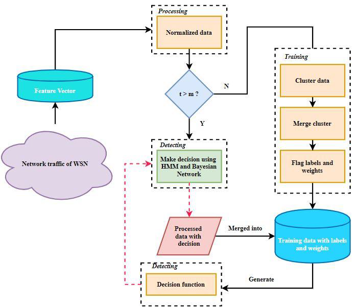

Research
Research Interests
- Research work carried in field of Wireless sensor Network and Internet of Things.
- Access control and Intrusion prevention in sensor networks.
- Verticalized Healthcare security system.
- Machine learning and programming hardware interface with machine learning.
- Security in Wireless Sensor Networks and Internet of Things.
Research Publications(Under accepted/under review)
- “Automation using Brain signals and Machine Interface” 1st International Conference on Innovation in Computer Science, Electrical and Electronics Engineering, Springer Nature Applied Science journal.
- 2019 “Data communication using single board computers” presented in SCI 2018-19 INDIA 2019 conference and accepted for publication in Springer LNNS series.
- “Detection Of Breast Cancer Using Machine Learning Algorithms” Advance Machine Learning Approaches In Cancer Prognosis: Challenges And Applications In Intelligent Systems Reference Library Indexed by Web Of Science, Scopus, DBLP And Springer Link
- “Brain Tumor Detection in an MRI Image Using Machine Learning Various Methods” Advance Machine Learning Approaches In Cancer Prognosis: Challenges And Applications In Intelligent Systems Reference Library Indexed By Isi Web Of Science, Scopus, DBLP And Springer Link
- “Design and Simulation of 5G Microstrip Patch Antenna with Phase Shifter and I- Shaped Array” “Microstrip Antenna Design for Wireless Application” with CRC Press, Taylor and Francis Group..
- “Parameter Enhancement of Microstrip Patch antenna using Novel Defected Ground Structures”Springer Nature Applied Science journal .
- “Design and Development of MIMO Antennas for Smart 5G Devices” International Journal of Information Technology, BJIT Springer Nature.
WSN Based Projects
Wireless Sensors

The network of nodes with sensing technology and wireless capability is termed as Wireless Sensor Network (WSN). WSN has high potential to adapt to the changes of how we live. Its budding technology makes the motes communicate with each other efficiently. The sensor nodes in WSN are referred as motes and they form the main building blocks for creating a network. The motes need to work efficiently and thus we present performance metrics that includes power consumption, size, cost, memory management, mote sensitivity, and OS for motes configuration. Certain challenges and constraints are designed for each mote in terms of low cost, limited communicational capabilities and low energy requirements. Many applications of WSN use different types of motes such as TinyNode, IRIS and Sun SPOT which can improve the performance of the network. Continue
Intrusion detection
Wireless Sensor networks (WSN) is basically comprised of sensors that are spatially distributed with selfruling capability, which monitors physical or environmental conditions such as, pressure, temperature, motion, sound and so on. Sensors also passes all the related information throughout the network. As the number of nodes and size of the network increases, there will be rapid increase in internet traffic. In WSN, security is the major issue and needs to a system that can provide security. Intrusion detection system is the system which plays a vital role in security of a system. One of the major challenges of WSN is to provide consistent Quality of Service (QoS) such as reliability, congestion control, energy efficiency and end-to-end delay, by applying secured routing protocols along with detection of an intruder so that QoS of WSN does not get affected. In our research work, we have discussed different routing protocols that are QoS based, to improve overall performance of the network. Continue
Review work

Wireless Sensor Network (WSN), in the most recent technology, is used for tracking and detecting the objects, remote monitoring and so on. The requirements of QoS, mainly for consumption of energy, at application layer is very critical issue in WSN. Wastage of energy is a considerable factor when many number of attempts for transmission is made, whenever failure occurs, due to interference and dynamics of channels. As WSN is comprised of autonomous devices and are also resource limited, the devices need to be monitored depending on many physical phenomena in specific field of interest. Most of the time, because of uncertainty in monitored environments, WSNs function as stochastic systems which leads to some critical challenges faced by the sensor network. The major objective is to maintain low cost and efficient service time using few adaptive methods for the formation of topology, resource and power optimization, exchange of data, object detection, coverage of sensing, and security. To achieve such design goals and to reduce energy consumption, the sensor nodes have to make optimized decision from different accessible strategies. In this work, survey on applications of Markov Decision Process (MDP) is presented by designing the MDP framework which is a powerful tool for decision making and further providing solutions to obtain energy efficient sensor network. This framework includes the development of protocols and adaptive algorithms in WSN. Also various methods for solution are discussed and the methods are compared to assist as a guide for using MDPs in Wireless Sensor network. Continue
Machine Learning

Network with large number of sensor nodes distributed spatially is termed as Wireless Sensor Network (WSN). The tiny devices called as sensor nodes are cheap, consume less power, and the capabilities of computation is limited. The most challenging issue for WSN is protecting the network from misbehavior of intruders or adversaries. One of the major techniques used to prevent from any type of attack in the sensor network is artificial intelligence system (AIS). Intrusion Detection System (IDS) is considered to be the second line of defense, as sensor nodes are first defense line. WSNs are highly vulnerable to intrusions and different types of attacks. In most critical applications of WSN, the human intervention or some physical devices are not sufficient for protecting the network from strong adversaries and attacks. Thus, artificial intelligence techniques are used for intrusion detection and prevention of sensor networks. Continue
Research Projects
-
BE Project
Server Load BalancingTools: Eclipse
Programming Language: .Net
Description: The system is designed where many clients are connected to a single server and the server is loaded with multiple threads and processes. So, the main aim of the project is to obtain efficient load balancing by the server such that, the performance of the system is not degraded. -
MTech Dissertation
Security and Intrusion Detection in HealthCare Application of Wireless Sensor Networks. - Maintenance of Troubleshoot Report (TR),Client: Erricson, in Development team, Wipro Technologies, Bangalore.